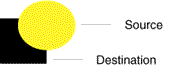

La clase
AlphaComposite encapsula varios estilos de composición, que determinan cómo se renderizan
los objetos superpuestos. Un AlphaComposite también puede tener un valor alfa que especifica el
grado de transparencia: alpha = 1.0 es totalmente opaco, alpha = 0.0
totalmente transparente (claro). AlphaComposite admite la mayoría de las reglas de composición
estándar de Porter-Duff que se muestran en la siguiente tabla.
| Regla de composición | Descripción |
|---|---|
Source-over (SRC_OVER) |
Si los píxeles del objeto que se está renderizando (el origen) tienen la misma ubicación que los píxeles renderizados anteriormente (el destino), los píxeles de origen se renderizan sobre los píxeles de destino. |
Source-in (SRC_IN) |
Si los píxeles de origen y destino se superponen, solo se renderizan los píxeles de origen del área superpuesta. |
Source-out (SRC_OUT) |
Si los píxeles de origen y destino se superponen, solo se renderizan los píxeles de origen fuera del área de superposición. Se borran los píxeles del área superpuesta. |
Destination-over (DST_OVER) |
Si los píxeles de origen y destino se superponen, solo se renderizan los píxeles de origen fuera del área de superposición. Los píxeles del área superpuesta no se modifican. |
Destination-in (DST_IN) |
Si los píxeles de la fuente y el destino se superponen, el alfa de la fuente se aplica a los píxeles de destino en el área de superposición. Si el alfa = 1.0, los píxeles en el área de superposición no se modifican; si el alfa es 0.0, los píxeles en el área de superposición se borran. |
Destination-out (DST_OUT) |
Si los píxeles de la fuente y el destino se superponen, el alfa de la fuente se aplica a los píxeles de destino en el área de superposición. Si el alfa = 1.0, los píxeles en el área de superposición se borran; si el alfa es 0.0, los píxeles del área superpuesta no se modifican. |
Clear (CLEAR) |
Si los píxeles del origen y del destino se superponen, los píxeles del área superpuesta se borran. |
Para cambiar el estilo de composición utilizado por la clase
Graphics2D, cree un objeto AlphaComposite y páselo al método
setComposite.
Este programa ilustra los efectos de varios estilos de composición y combinaciones alfa.
Composite.java contiene el código completo de este applet.
Se construye un nuevo objeto ac de tipo AlphaComposite llamando a
AlphaComposite.getInstance y especificando la regla de composición deseada.
AlphaComposite ac =
AlphaComposite.getInstance(AlphaComposite.SRC);
Cuando se selecciona una regla de composición diferente o un valor alfa, se llama de nuevo a
AlphaComposite.getInstance y se asigna el nuevo AlphaComposite a ac. El
alfa seleccionado se aplica además del valor alfa por píxel y se pasa como un segundo parámetro a
AlphaComposite.getInstance.
ac = AlphaComposite.getInstance(getRule(rule), alpha);
El atributo compuesto se modifica pasando el objeto AlphaComposite a Graphics2D
setComposite. Los objetos se representan en un BufferedImage y luego se copian en la
pantalla, por lo que el atributo compuesto se establece en el contexto Graphics2D para
BufferedImage:
BufferedImage buffImg = new BufferedImage(w, h,
BufferedImage.TYPE_INT_ARGB);
Graphics2D gbi = buffImg.createGraphics();
...
gbi.setComposite(ac);